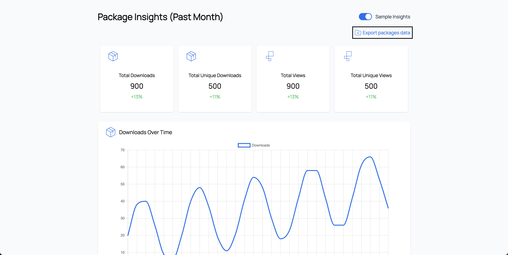

Data Export
Introduction
Scarf provides a robust platform for tracking package downloads and pixel views. The ability to export this data is crucial for analytics, reporting, and integrating with other tools. This guide aims to provide a clear and concise explanation of how to export data from Scarf, what data is exported, and how to make use of any available integrations.
Prerequisites
Exporting data from Scarf will only work if you are on a Scarf Basic or Premium Plan.
How to Export Event Data
Scarf Dashboard
To export data out of Scarf,
- go to the main dashboard and
- click "Export packages data".
This will export all data, for the default period, over the past month.

The data you can export from Scarf includes all events (defined as package downloads and pixel views) from every user that has interacted with your Scarf-enabled artifacts (packages and pixels). Upon clicking "Export packages data", this data will download as a .csv file.
Scarf API
You can also export this data using the Scarf API.
What Data is Exported
Export Fields
The event data export includes the following data fields
| name | type | description |
|---|---|---|
| id | text |
Identifier for the event (pixel view or package download). This value is stable for a given event, but exports are at-least-once and may include duplicate rows with the same id (even within the same CSV part). Duplicate rows should be identical; consumers should de-duplicate by id. |
| type | text |
This categorizes the type of event that occurred (e.g. pixel-fetch, manifest-fetch, binary-download, etc.). |
| package | text |
For Scarf package downloads, this specifies which package has been downloaded. |
| pixel | text |
For Scarf page views, this specifies which pixel has been downloaded. |
| version | text |
For Scarf package downloads, this specifies which version of the package has been downloaded. |
| time | timestamp |
This refers to the time in UTC that the event occurred. |
| referer | text |
For Scarf pixel views, this refers to the page that was viewed. |
| user_agent | text |
This refers to the User-Agent, which provides information around the method of installation, often including information such as operating system, device, browser, architecture, and client. |
| variables | text |
This refers to any custom-specified variables that you might use Scarf to track in file package downloads. |
| origin_id | text |
This uniquely identifies the user (through a specific device) who has interacted with a Scarf event. |
| origin_latitude | numeric |
This is the latitude of the location Scarf is able to identify for the event. |
| origin_longitude | numeric |
This is the longitude of the location Scarf is able to identify for the event. |
| origin_country | text |
This is the country of the location Scarf is able to identify for the event. |
| origin_city | text |
This is the city of the location Scarf is able to identify for the event. |
| origin_state | text |
This is the state of the location Scarf is able to identify for the event. |
| origin_postal | text |
This is the postal code (ZIP code, in the US) of the location Scarf is able to identify for the event. |
| origin_connection_type | text |
This categorizes the type of IP address Scarf is able to identify (e.g. business, isp, hosting, etc.). |
| origin_company | text |
If Scarf is able to associate the event with a known business entity, that business entity is listed here. |
| origin_domain | text |
If Scarf is able to associate the event with a known business entity, that business entity's web domain address is listed here. |
| dnt | boolean |
If the user includes a DNT request in their header, that is logged here and they will not be tracked. |
| confidence | numeric |
The probability of correct identification of the data. |
| endpoint_id | text |
This uniquely identifies the public-facing device that has interacted with a Scarf event. Unlike origin_id, it is notably not sensitive to changes in device information like client, user agent, etc. |
| mtc_quota_exceeded | boolean |
A value of true indicates the company information from the event data row was scrubbed due to exceeding the MTC limit. |
A note on duplicates / de-duplication
Scarf’s raw event exports should be treated as at-least-once delivery.
That means you may occasionally see the same event id more than once in an export (for example: across multiple ...-part-00000N.csv files, or even duplicated within a single part file).
Recommended handling:
- If you are ingesting these exports into a warehouse, de-duplicate on
id. - If multiple rows share the same
id, treat them as the same logical event. - You should not expect field-level differences between duplicate rows for the same
id.
We’re actively working on eliminating these duplicates at the source, but for now they are possible system behavior.
How to Export Aggregate Data
The documentation for exporting aggregates can be found in Export aggregates. Here's an example curl request to download aggregate data. The output is newline delimited json.
curl -o {filename}.jsonl \
-H "Authorization: Bearer {token}" \
-H "Content-Type: application/x-ndjson" \
"https://api.scarf.sh/v2/packages/{owner}/aggregates?start_date={start_date}&end_date={end_date}&breakdown=by-company"
How to Export Company Data
The documentation for exporting company data that is rolled up with a daily interval can be found in Export Company Data
Here's an example curl request to download company rolled up data.
curl -o company-rollup.csv \
-H "Authorization: Bearer {token} \
-H "Content-Type: text/csv" \
https://api.scarf.sh/v2/packages/{owner}/company-rollup
The company data export includes the following data fields.
| name | type | description |
|---|---|---|
| company_name | text |
Name of the company |
| company_domain | text |
Domain of the company. Eg. scarf.sh |
| funnel_stage | text |
Stage of a company's journey in using your software |
| total_events | numeric |
Sum of package and pixel events (total_downloads + total_views) |
| total_downloads | numeric |
Total package events from package artifacts |
| total_unique_downloads | numeric |
Total unique package events from package artifacts |
| total_views | numeric |
Total pixel events from tracking pixel artifacts |
| total_unique_views | numeric |
Total unique pixel events from tracking pixel artifacts |
| unique_sources | numeric |
Number of distinct sources of traffic that comprise the total event count from this organization. |
| first_seen | text |
Date of when the first event occured |
| last_seen | text |
Date of when the last event occured |
| company_linkedin_url | text |
A company's LinkedIn link |
| company_industry | text |
A company's industry. Eg. Tech, Government, etc. |
| company_size | text |
A company's approximated employee count |
| company_country | text |
A company's country location |
| company_state | text |
A company's state location |
| interest_start_date | text format: yyyy-mm-dd |
Date when a company started in the interest funnel_stage |
| investigation_start_date | text format: yyyy-mm-dd |
Date when a company started in the investigation funnel_stage |
| experimentation_start_date | text format: yyyy-mm-dd |
Date when a company started in the experimentation funnel_stage |
| ongoing_usage_start_date | text format: yyyy-mm-dd |
Date when a company started in the ongoing usage funnel_stage |
| inactive_start_date | text format: yyyy-mm-dd |
Date when a company started in the inactive funnel_stage |
| scarf_url | text format: uri |
URL to the Scarf dashboard page for this company's activity |
| package_totals | text |
A string of <package_name>=<download total> pairs, in query parameter format (i.e., & delimited) |
| tracking_pixel_totals | text |
A string of <pixel_name>=<view total> pairs, in query parameter format (i.e., & delimited) |
How to Export Company Events
The documentation for exporting company events can be found in Export Company Events. Here's and exampe curl request to download company events data.
curl -o company-events.csv \
-H "Authorization: Bearer {token}" \
-H "Content-Type: text/csv" \
"https://api.scarf.sh/v2/companies/{owner}/{domain}/events?start_date={start_date}&end_date={end_date}"
Integrations
Scarf to PostgreSQL
GitHub: https://github.com/scarf-sh/scarf-postgres-exporter
Overview
The Scarf to PostgreSQL Exporter is a script designed to pull down your raw Scarf data and send it into a PostgreSQL database. This script is intended to be run as a daily batch job. It provides an automated way to backfill and update your PostgreSQL database with Scarf's enhanced data.
Prerequisites
psqlmust be installed and available in your environment (or use the Docker container with everything you need).- A Scarf Account.
- Your Scarf API token. You can find your API Token from your user settings page.
Settings
The following environment variables are required:
SCARF_API_TOKEN: Your Scarf API access token.SCARF_ENTITY_NAME: Your Scarf username or the name of your organization.PSQL_CONN_STRING: The PostgreSQL connection string.
optional
BACKFILL_DAYS: Number of days to backfill data. Defaults to 31 if not set.
Getting Started
For more details, you can visit the GitHub repository.
Future Integrations
Integrations are in development, if you have particular data sources you'd like Scarf to integrate with, we'd love to hear from you.
Daily Scheduled Exports
In your organization settings, fill in the details for the export.
Scheduling an export can also be done with our REST endpoint https://api.scarf.sh/v2/exports/{owner}/schedule-export
We can export both raw events and company rollups.
After scheduling the export, we send a test file named scarf-test.csv to verify connectivity to your bucket. This file will only contain CSV headers. Once connectivity is confirmed, the export process will automatically begin sending files to your bucket every day. Typically, exports run in the evening UTC for the previous days' data.
AWS S3 Integration
Setting up your S3 account
The S3 uri that you submit will be considered as the bucket name. Do not specify an object key. The service will generate the object key with the format <events|company-rollups>-scarf-export-<start date>-<end date>.csv.
Create a policy that states we can assume a role. Here's an example of that policy. This example is a highly permissive role. If you want to customize the role, please refer to the proper AWS documentation.
{
"Version": "2012-10-17",
"Statement": [
{
"Effect": "Allow",
"Action": [
"sts:AssumeRole",
"sts:*"
],
"Resource": "*"
},
{
"Effect": "Allow",
"Action": [
"s3:*"
],
"Resource": [
"arn:aws:s3:::<bucket-name>/<folder-a>/<subfolder-a>/*"
]
}
]
}
arn:aws:iam::<account-id>:role/<role-name>
032190491485.
After creating the role, go to the "Trust relationships" and add the following trust policy
{
"Version": "2012-10-17",
"Statement": [
{
"Effect": "Allow",
"Principal": {
"AWS": "arn:aws:iam::032190491485:user/production-v2-scarf-server"
},
"Action": "sts:AssumeRole"
}
]
}
If you want to use an ExternalId, your trust policy should be modified to look like the example below:
{
"Version": "2012-10-17",
"Statement": [
{
"Effect": "Allow",
"Principal": {
"AWS": "arn:aws:iam::032190491485:user/production-v2-scarf-server"
},
"Action": "sts:AssumeRole",
"Condition": {
"StringEquals": {
"sts:ExternalId": "<can be any string>"
}
}
}
]
}
The ARN role is what you will need in the arn_role api field.
This is not an exhaustive documentation of how to setup a shared s3 bucket. Please refer to the AWS documentation for more information.
Google Storage Integration
Before going through the steps of setting up an integration with scarf, ensure your google cloud account has Service Account Credentials API enabled. We will be using service account impersonation so we can integrate with your google account.
Create a service account. You can can do this by following these steps.
- Go to the
IAM & Adminpage. - Select
Service Accounts. - Click on
+ CREATE SERVICE ACCOUNT. - Fill in the details.
- Grant the service account with the following roles:
- Storage Object User
- Click done, and you should be done creating the service account 🎉
After creating the service account, grant scarf access to that service account by doing the following.
- Select the service account.
- Under the
PERMISSIONStab, you should seeGRANT ACCESS. Click on it. - After clicking
GRANT ACCESS, you should see an input box forNew principals. - Add our account
storage@scarf-integration.iam.gserviceaccount.com. - Grant the scarf account the following role:
- Service Account Token Creator
We will be streaming the content of the exports in chunks and using google storage's compose api to stitch all the chunks in a file. So for a brief moment you might see multiple temporary objects in the bucket you have provided us.